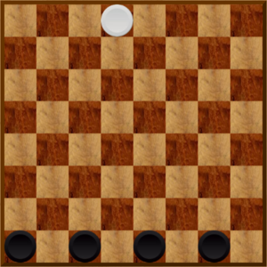

Wolfandsheeps
Board Game Arena 官方规则文档
Objective
Beware this is an asymmetric game :
- BLACK : Wolves need to block the Sheep.
- WHITE : Sheep needs to pass through the wolves and reach their starting line.
Components
- A Chess like board
- 1 white token (called "Sheep")
- 4 black tokens (called "Wolves")
Setup
- Wolves are placed onto fields B8, D8, F8, and H8.
- Sheep starts the game from E1.

Start of the game
On Your Turn
You can move :
- 1 piece at a time
- only diagonally (so you always play on the same cell color of the board)
- only 1 step at a time
- the sheep can move backward, not the wolves
End of game
Beware this is an asymmetric game :
- WHITE Victory : Sheep wins by reaching the other side of the board (8th row or 10th row according to played variant).
- WHITE BGA auto victory : if there is not enough wolves in front of the sheep to block the sheep.
- BLACK Victory : Wolves win by blocking the sheep such that it cannot move anymore (when sheep has no legal move left).
Variants
- Board size
- Chess board : 8x8
- Checkers board : 10x10 (+1 black token)
- Duration
- 1 round is a classic play as defined here
- 2 rounds : One round with Player 1 as White VS Player 2 as Black, then one round with Player 2 as White VS Player 1 as Black
User Preferences
- Board colors
- Tokens on dark cells : Tokens are places as in the pictures on the "black"/darkest cells of the board
- Tokens on light cells : Tokens are places on the "white"/brightest cells of the board
- Interface theme
- Standard : the same background as any classic BGA game like Chess.
- Darker: a black background with 75 % opacity